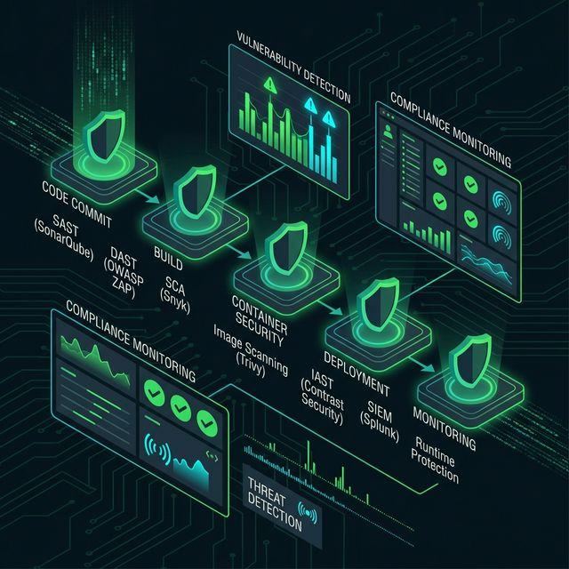
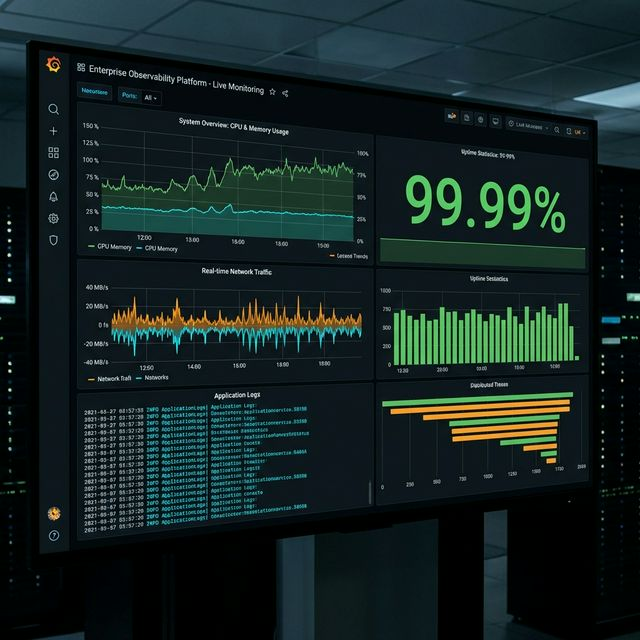
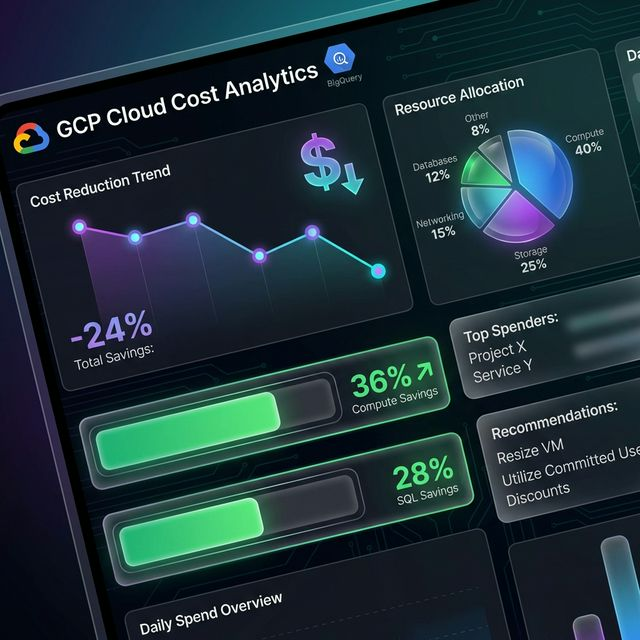
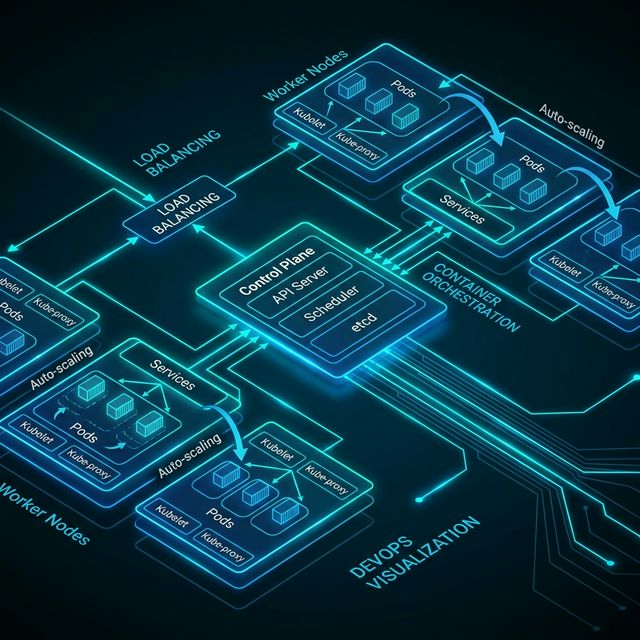
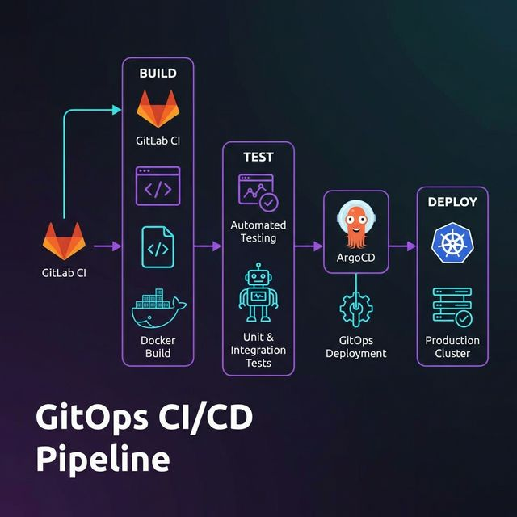
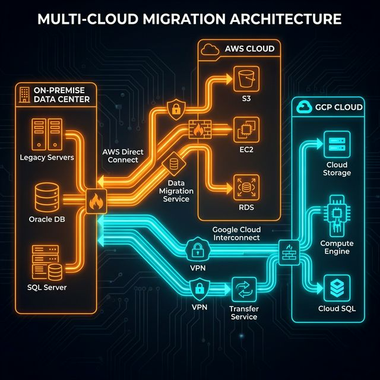

I Build Infrastructure
That Doesn't Break
Architecting production systems that handle millions of requests, cost 40% less to run, and deploy 50+ times a day without breaking a sweat.
About Me
DevOps Engineer & Infrastructure Architect
I architect resilient, self-healing cloud infrastructure where security, scalability, and cost-efficiency are built-in by design. My focus is on creating silent, high-performance systems that empower development teams to ship faster without breaking production.
True engineering excellence lies in simplicity and automation. I specialize in untangling complex workflows and implementing robust Infrastructure as Code (IaC) that turns manual operations into predictable, repeatable code standards.
Beyond the terminal, I maintain a strong "Offline Layer" to stay grounded. Whether it's the precision of music, the endurance of high-altitude trekking, or culinary creativity, these pursuits recharge my focus, ensuring I bring clarity and balance to every architectural decision.
Infrastructure as Code
Terraform, Ansible, CloudFormation for scalable infrastructure automation
CI/CD Engineering
Jenkins, GitLab CI, ArgoCD for seamless deployment pipelines
Cloud Architecture
AWS, GCP, Azure multi-cloud solutions and migrations
DevSecOps
Security-first approach with automated compliance and monitoring
Infrastructure Stack
Cloud Infrastructure
Foundation LayerOrchestration
Compute LayerIaC & Automation
Provisioning LayerCI/CD Pipeline
Delivery LayerObservability
Monitoring LayerScripting
Automation LayerProduction Originals
Curated DevOps stories across security, cost, Kubernetes, and delivery.
Security & Compliance
Hardening, SIEM, and production-grade defenses.

Hardened VM Golden Image with Lynis
Created production-grade hardened golden images using Packer and Ansible with comprehensive security configurations. Achieved Lynis security audit score of 86/100 through systematic hardening including CIS benchmarks, kernel tuning, and automated security policies, deployed across ParkPlus production infrastructure.

Wazuh SIEM Security Platform
Architected and deployed enterprise-grade Wazuh SIEM solution for ParkPlus without any paid tools. Enabled comprehensive security monitoring, intrusion detection, file integrity monitoring, and compliance auditing across 367 VMs with real-time alerting and response.
FinOps & Cost Optimization
Making cloud bills look like engineering, not accidents.

Multi-Cloud Cost Optimization
Developed automated cost optimization solutions across multiple organizations. For ParkPlus (via Hanu) achieved 36% compute and 28% SQL cost savings through lifecycle policies and right-sizing, and built reusable analysis tooling for other enterprises.
Kubernetes & Infrastructure
Clusters, VMs, and observability wired for scale.

Terraform GCP Infrastructure
Production-grade Terraform modules for GCP powering multi-region GKE clusters, VPC networks, service accounts, and Cloud SQL. Manages 367 VMs across ParkPlus infrastructure with autoscaling from 3–50 nodes per cluster.
Kubernetes Monitoring Stack
Production observability stack for Kubernetes with Prometheus, Grafana, Alertmanager, and on-call integrations. 12 custom dashboards, 45 alert rules, and tight SLOs monitoring 367 VMs and 15K+ time series.
Delivery Pipelines
GitOps and CI/CD that behave like platforms.

ArgoCD GitOps Deployment
Production GitOps deployment patterns using ArgoCD: app-of-apps, sync waves, blue–green strategies, and automated rollbacks. Manages 45+ apps with more than 50 deployments per day.

CI/CD Pipeline - Microservices
Production-ready CI/CD pipelines for Kubernetes microservices using GitHub Actions, Helm, and Docker. Includes automated testing, security scanning with Trivy/Snyk, progressive delivery, and automatic rollbacks with a 99.2% success rate.
Offline Layer
System Maintenance & Creative Output
Audio Orchestration
Lead Guitarist
Managing soundwaves and high-fidelity output. Improvisation in high-pressure live environments.

High Availability
Alpine Trekker
Scaling mountains when not scaling clusters. Endurance testing in extreme conditions.

Flavor Deployment
Culinary Artist
Testing recipes in production. Precision plating and flavor stack optimization.